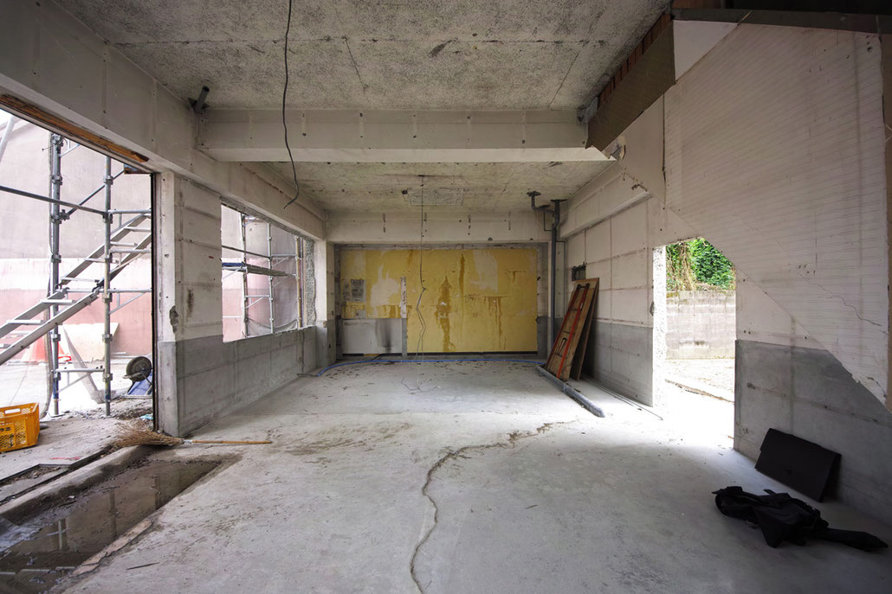
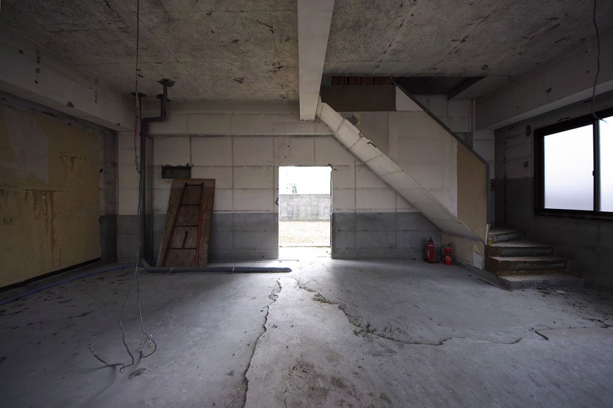
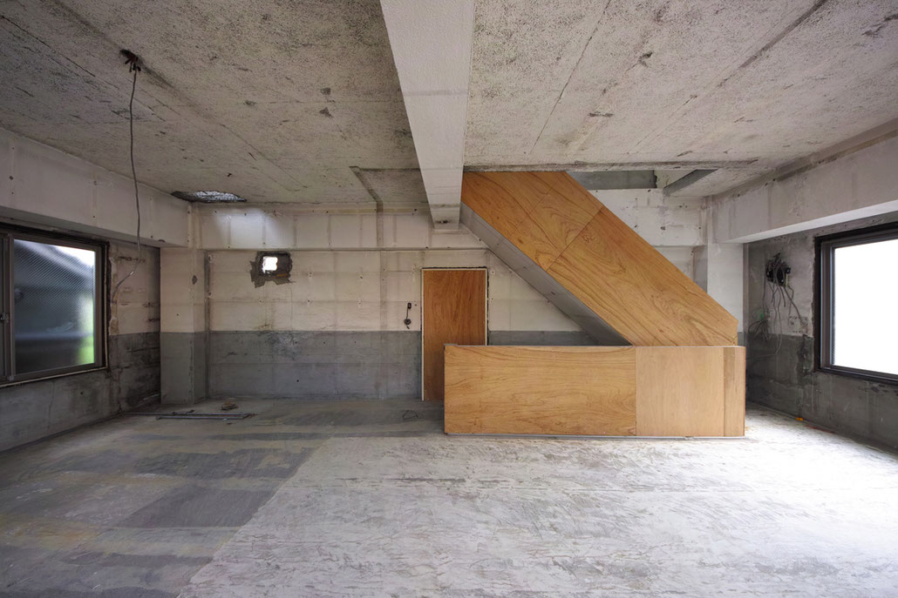
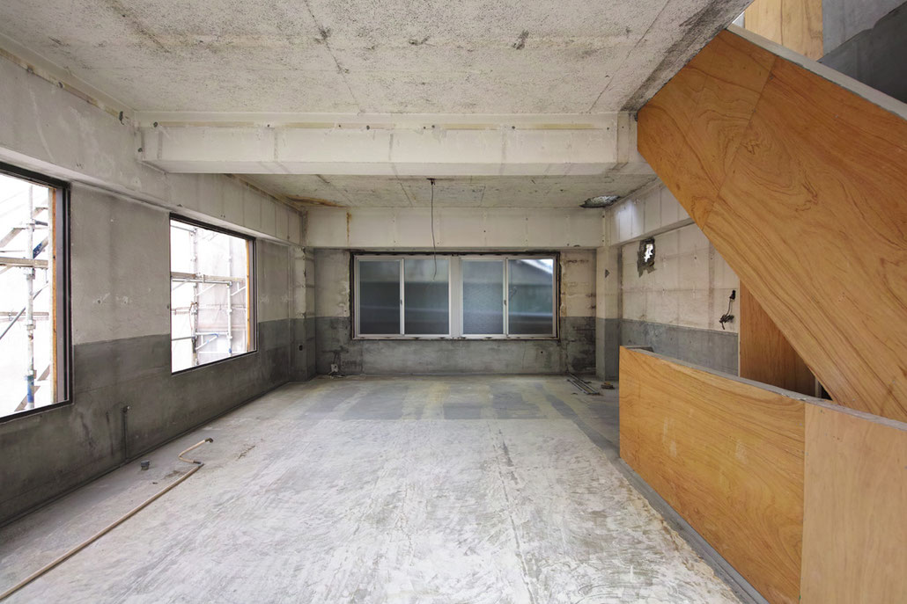
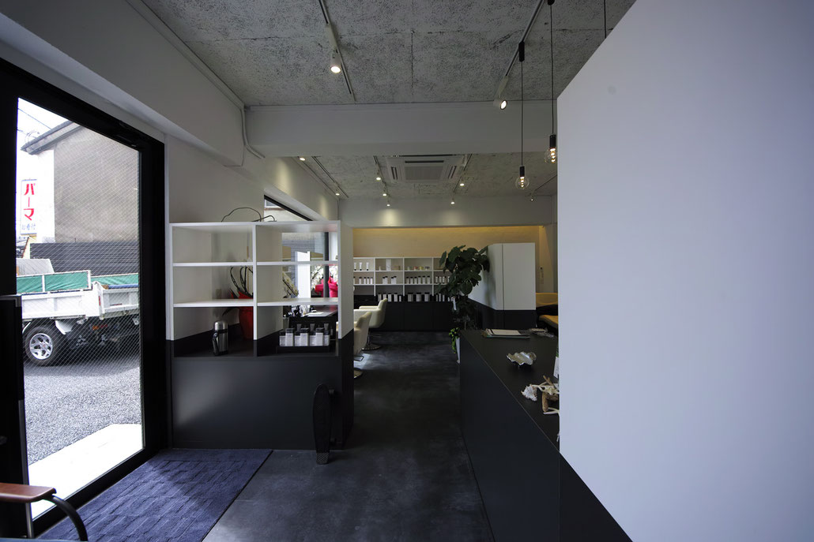
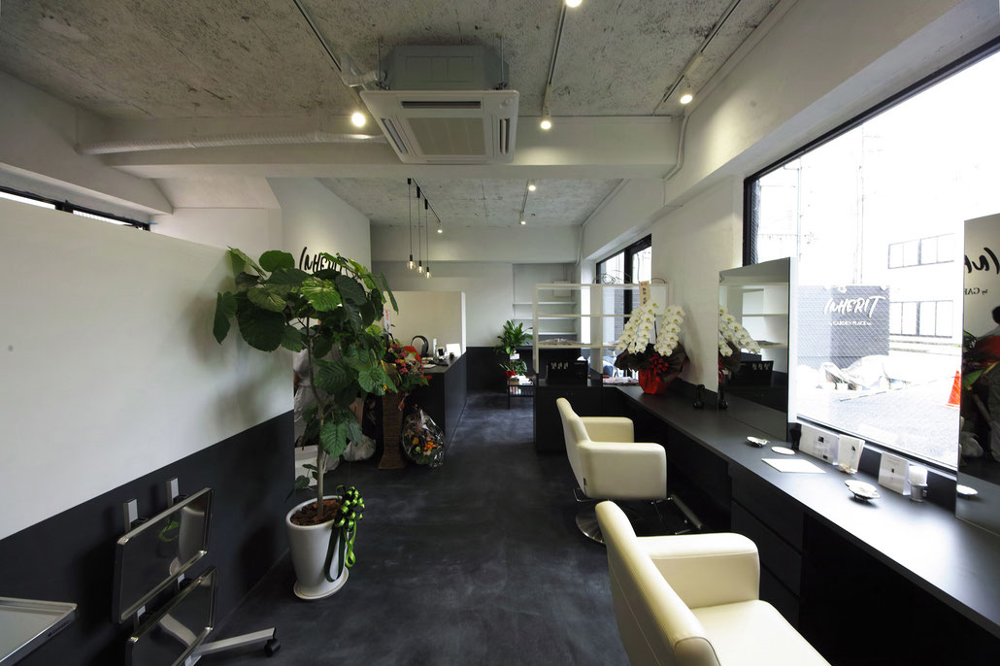
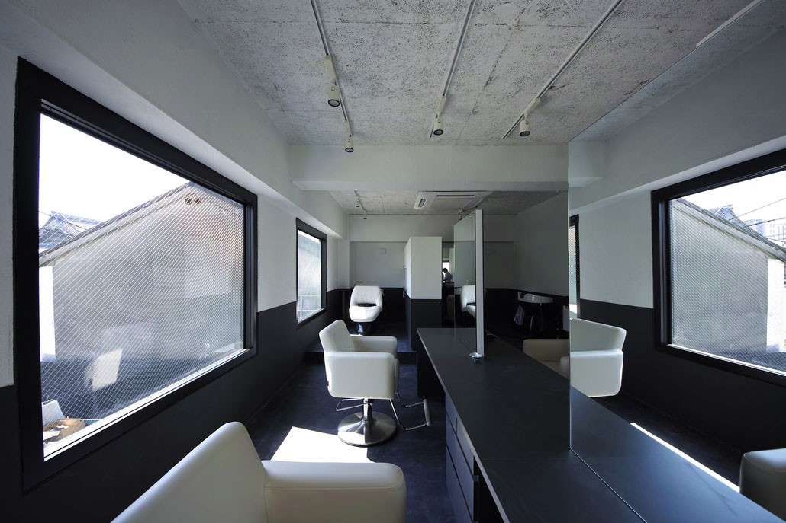
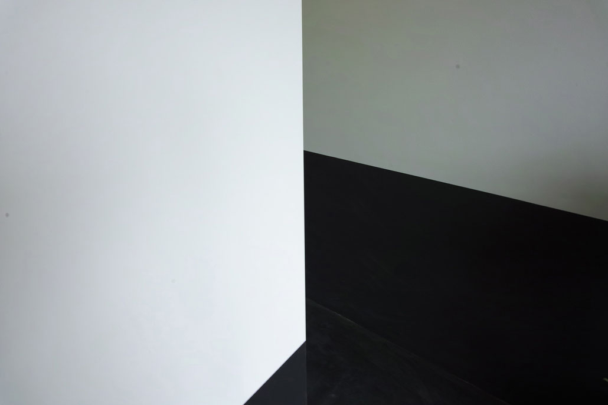
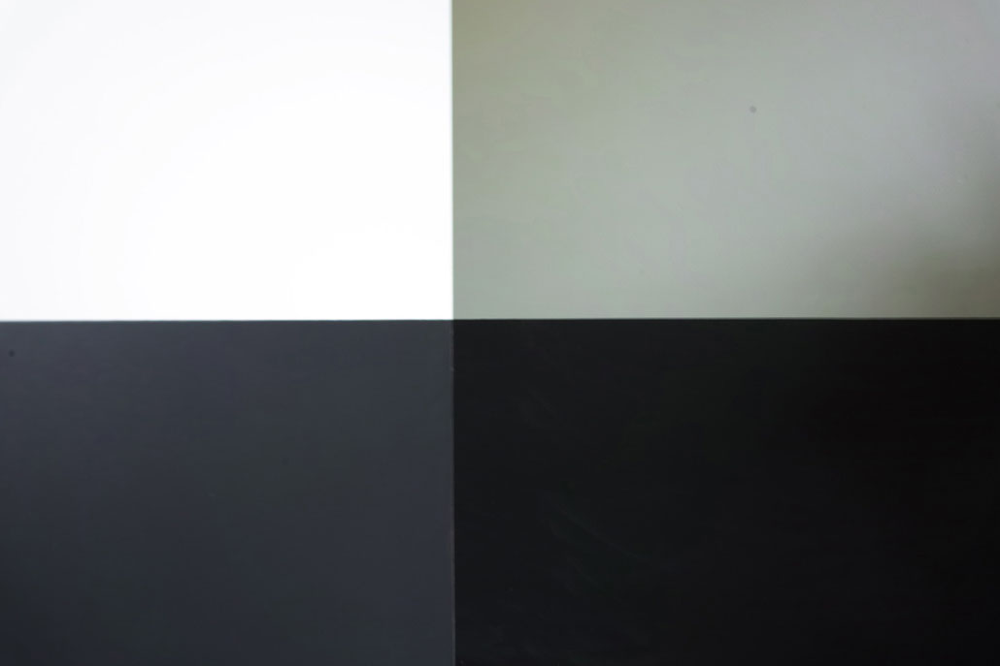

美容室リノベーション
INHERIT
美容室リノベーション ／ 福岡県久留米市
福岡市久留米市内にあるRC3階建の美容室リノベーションを行った。
建築当時はブライダル店舗、そして美容室へと姿を変え、今回の美容室の姿へと50年の歳月を経て実現した。
過去の表皮を剥ぎ取ると既存躯体に高さ約1mのラインでコンクリートの腰壁が廻り、建築当初の仕上げであった白壁とコンクリート色による水平方向の境界線が広がっていた。
この境界線を建物が持つエッセンスとして捉え、今回の美容室の構成に継承し、新規壁と造作家具でこのルールを周到し拡張を行った。
黒と白の境界による風景に人が介入することにより、まるで水に浸かっているような状況が生まれる。
新しく染められた髪色が白壁に浮かび上がり、これから先の時間を歩む空間を彩らせる。
- 敷地
- 福岡県久留米市
- 構造
- RC造3階建
- 種別
- 改修
- 用途
- 美容室
- 施工
- デコール田中
- 竣工
- 2018.5
- 写真
- © DAISUKE SUMI








